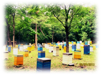
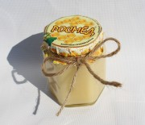
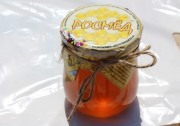
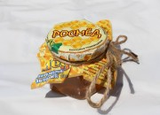

 Мы Компания производитель ООО "РОСМЁД". Наша семья занимается пчеловодством с 1968 года и является профессионаломи в третьем поколении. Мы расположены в центре Приморского края в Яковлевском районе. Наш регион в 90х годах был известен как крупный производитель натурального мёда по всему СССР. Здесь процветает около полторы тысячи полевых цветов и более восьми видов деревьев липы, из них три вида более медоносные которые процветают только в Приморском крае. Мёд с приморской липы заслуженно популярен: это чрезвычайно вкусный и целебный монофлерный мед, а Приморский край является мировым рекордсменом по его производству.
В пчеловодстве ценится липовый ммед. Белый мед исопльзуют в лечебных целях, он имеет богатый состав. Польза липового меда не сравнится с другими сортами. Его применяют для лечения простуды, когда она только начинается, он имеет потогенные и противовирусные свойства. Также используют как редство улучшающее состояние организма, налаживание средечную работу.
Липа редко растет в лесах Европы, может занимать только небольшую площадь. В липовом продукте обязательно содержится небольшое количество пыльцы. Такой мед очень полезен. Он имеет антибактериальные свойства, поэтому с помощью его можно излечить ангину, ларингит, гайморит. В нем нет химических веществ.
Цветочный мед известен своим богатым составом, который обусловлен огромным количеством экстрактов растений-медоносов. Лакомство имеет умеренный сладкий вкус с легким оттенком горечи и пряностей. Мед впитал в себя ароматы множества цветочных растений, поэтому его запах очень насыщенный и сочный.
Почитают на Руси преподобного Зосиму, как покровителя пчельников и хранителя пчел. Духовное повествование свидетельствует, что путешествуя по дальним странам преподобные Зосима и Савватий, чудотворцы Соловецкие, по повелению Божию принесли в набалдашнике посоха матку пчелиную и, пустив ее в русскую землю, положили начало пчеловодству. «Попаси Зосим Соловецкий пчелок стаями, роями, густыми медами!» - просят пчельники и ставят образ преподобного Зосимы на улей. На иконах этот святой изображен рядом с ульем пчел.
Медовый Спас – народный и православный праздник на Руси. С этим праздником связывают окончание лета. Пасечники заламывают в ульях первые медовые соты. Именно с этого дня разрешается есть мед. Первый добытый мед полагается освятить в церкви. Этот день еще называли «Маковым Спасом» и пекли постные пироги, рулеты, булочки, пряники с маком и мёдом.
В этот день отмечается память Савватия Соловецкого — преподобного Русской православной церкви и основателя Соловецкого монастыря. Святой Савватий считается в народе покровителем пчел и пчеловодства. Он и святой Зосима (друг и сподвижник Савватия) почитались всеми пчеловодами на Руси. Считалось, что они первыми научили русский народ правильному пчелиному хозяйству. На каждом пчельнике, как правило, находилась икона соловецких святых.
{kind=link}
{kind=link}
{kind=link}
{kind=link}
{kind=link}
{kind=link}